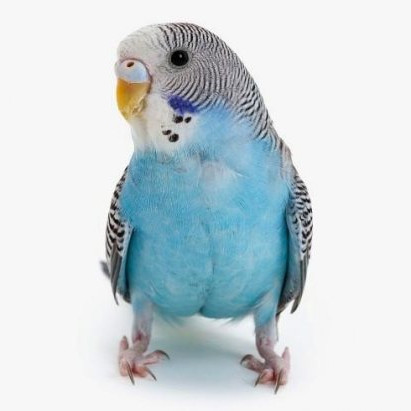

Хвилястий папуга — це маленький, яскраво забарвлений птах із родини папугових, відомий своїм характерним зеленим оперенням із хвилястим візерунком на спині. Цей вид походить з Австралії, де мешкає на відкритих просторах та луках. У неволі хвилясті папуги є одними з найпопулярніших домашніх улюбленців.
Хвилясті папуги є соціальними птахами, що утворюють великі зграї в дикій природі. Вони мають високу здатність до навчання і можуть імітувати звуки та людську мову. Їхній раціон складається з насіння, фруктів і зелені.
У дикій природі хвилясті папуги живуть на відкритих рівнинах Австралії, особливо в посушливих та напівпустельних районах. Вони активно пересуваються, шукаючи джерела води та їжі.
Ось кілька корисних веб-ресурсів:
